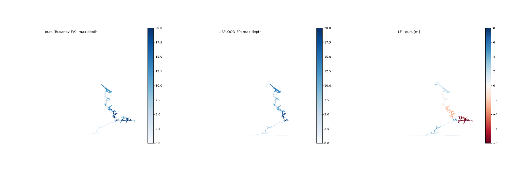
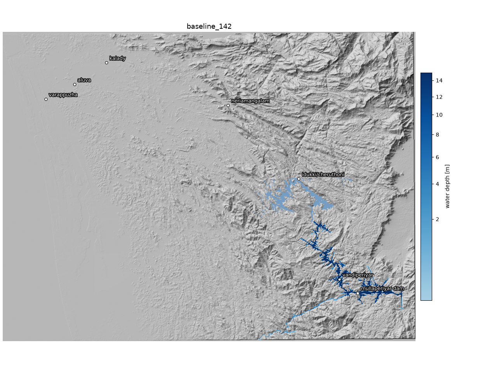
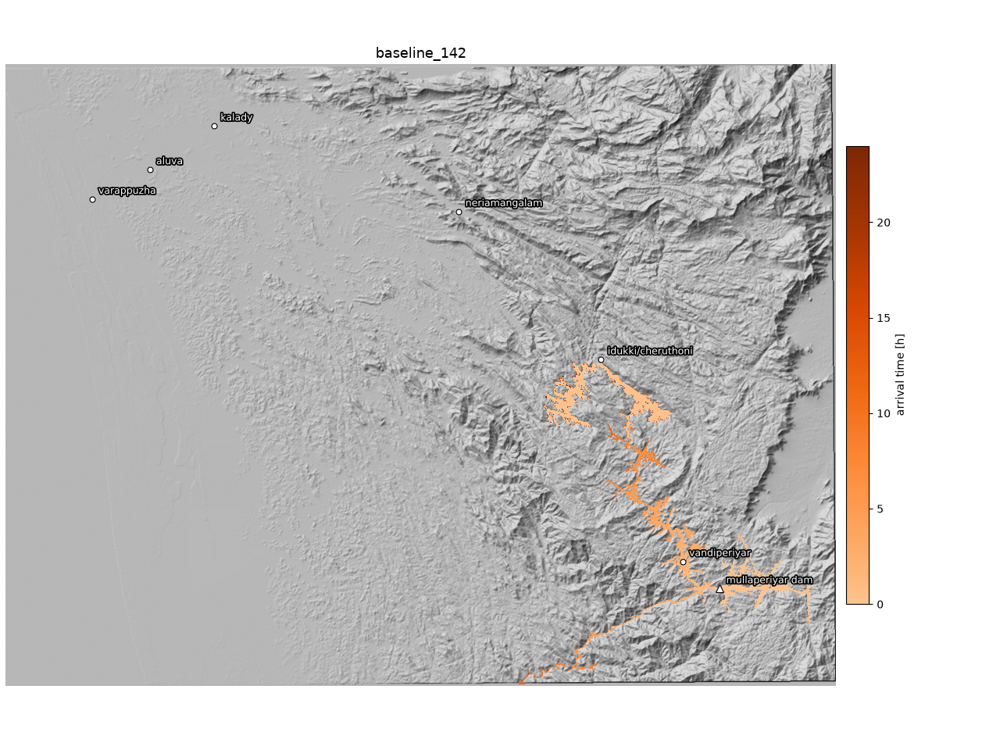

a simulation diary · periyar river · idukki, kerala · v2
The Dam, the Dispute, and Me
In which I get tired of not knowing whether a 130-year-old dam is a civilizational threat or a talking point, and decide to flood Kerala on my own PC, carefully, several times.
The argument that is older than everyone arguing it
There is a dam in the Western Ghats that was finished in 1895, built from lime-surkhi masonry by British engineers, on a lease signed in 1886 that runs for nine hundred and ninety-nine years. Everyone involved in signing it is extremely dead. The dam sits in Kerala, is operated by Tamil Nadu, and holds back the Periyar river so its water can be sent the other way, east, through a tunnel, to irrigate land the river never intended to visit. This arrangement has been in court, on and off, longer than most countries have existed in their current form.
The dispute has a shape you already know. Kerala, which lives downstream, says the dam is a geriatric time bomb and cites 3.5 million people in the flood path. Tamil Nadu, which lives off the water, says the dam is fine, strengthened, inspected, and that the panic is theatre. The Supreme Court has weighed in more than once, and the number everyone fights over is a mark on a gauge: whether the reservoir may stand at 136, 142, or 152 feet. Entire election cycles have metabolized those sixteen feet. (The gauge on the left edge of this page is real, to scale, and fills as you read. Make of that what you will.)
Here is my problem: both sides are running an incentive structure that rewards exaggeration. Downstream, fear is mobilizing. Upstream, reassurance is existential. Somewhere underneath the affidavits there is an actual physical question — if this dam failed, what would the water actually do? — and it felt increasingly deranged to me that I was forming opinions about it from headlines.
What finally tipped me over was drinks with Hemant, Kiran and Amit. Hemant was genuinely worried — the Kerala press was in full Kochi-underwater mode — and I didn't think it was that serious. We tried to settle it at the table, everything traced back to the IIT study, the study looked thinner than its reputation, and when I said I'd just simulate it myself, they were delighted. So. I have a PC. Water obeys equations. The equations are public. The terrain has been measured from orbit. How hard could it be?
Narrator: it was moderately hard, and almost none of the hardness was the physics.
What I built
A 2D shallow-water solver — the honest, unglamorous kind: first-order finite volumes, a Rusanov flux with hydrostatic reconstruction so that a lake at rest stays exactly at rest, wet/dry fronts, Manning friction, adaptive timesteps, mass accounted to the last cubic metre. Written in Python with numba, about four hundred lines, no flood-modeling framework underneath. Terrain from the Copernicus 30 m global elevation dataset, resampled to 90 m. Breach outflow from the Froehlich (2008) empirical equations feeding a weir, plus a nastier variant where a third of the crest simply ceases to exist. Three scenarios: the reservoir at today's permitted 142 ft; the same but with the downstream Idukki mega-reservoir failing in cascade; and the full 152 ft pool with the instant collapse.
The full methodology, with every equation, bug, and dead end, is in the repo's JOURNEY.md. Two details matter for what follows.
First: mass conservation is a ledger, not a hope. Every run closes its water budget to +0.000%. I mention this because, of all the published studies I later compared against, none reports a volume balance at all, and one of them — we'll get there — quietly loses the plot in other ways.
Second: the satellite measured the trees. Copernicus is a surface model. The Periyar below the dam runs through a forested canyon 50–150 m wide, and at 90 m resolution the canopy closes over it like a lid. My first simulated flood hit a wall of oaks-as-geology, ponded fifty metres deep, and refused to go to the sea. I spent a day performing hydrological surgery — priority-flood depression breaching with an epsilon gradient, which is a real published algorithm and not something I invented in a fugue — to convince the valley it was a valley. Remember this; it is the single largest asterisk on everything below.
What the water did — now as cinema
Words first, then the films. In every scenario the breach empties the reservoir down a gorge toward the town of Vandiperiyar, then north into the arms of the Idukki reservoir. What happens next depends entirely on whether you believe Idukki holds.
| baseline_142 | cascade_142 | sudden_152 | |
|---|---|---|---|
| breach model | Froehlich (175 m over 2.5 h) | Froehlich | ⅓ crest, instantaneous |
| peak outflow | 50,540 m³/s | 50,540 m³/s | 65,287 m³/s |
| Vandiperiyar (6 km) | 1.9 h · 29 m deep | 1.9 h · 29 m | 35 min · 30 m |
| surge reaches Idukki | 6.8 h | 6.8 h | 5.1 h |
| Idukki reservoir | absorbs 297 Mm³, rises 5.2 m | fails (assumed), releases 1,460 Mm³ at 387,000 m³/s | same, 1.7 h earlier |
| Neriamangalam | dry | 9.0 h · 47 m | 7.3 h · 47 m |
| Kalady | dry | 13.9 h · 3.2 m | 12.2 h · 3.2 m |
| Aluva | dry | 17.3 h · 2.3 m | 15.7 h · 2.3 m |
| Varappuzha | dry | 22 h · 1.9 m, rising | 20 h · 2.4 m, rising |
Three things stopped me cold.
One: the gorge is unambiguous. In every scenario, under every assumption I could throw at it, Vandiperiyar — a real town, tea stalls, a bus stand — takes twenty to thirty metres of water within an hour or two. There is no parameter I found that changes this in kind. Anyone using this stretch of valley as a rhetorical football should be made to stare at that number.
Two: Idukki is the hero of the baseline, and this is under-discussed. Watch it happen:
If Idukki holds, Kochi's fate is not decided at Mullaperiyar; it is decided at Idukki, by a much bigger, much younger, much better-instrumented dam, and by whether its operators have hours of warning (they would have several) and somewhere to put the water (that's the real question).
Three: the apocalypse requires a sequel. The scary maps — the ones reaching Aluva and the backwaters — only happen in the cascade, which requires assuming a modern 168-metre arch dam and its companions fail because their reservoir came up five-ish metres. That is not a small assumption. It is the load-bearing assumption of the entire civilizational-threat narrative, and it usually goes unmentioned in the scary version of the story.
Then I checked myself against everyone else
| quantity | published | this project | verdict |
|---|---|---|---|
| peak breach outflow | 15,405 → 89,121 m³/s (spread across studies: 6×) | 50,540 – 77,397 m³/s | inside the (weirdly wide) range |
| depth just below dam | 40.3 – 45.3 m | ~40 m | match |
| Vandiperiyar peak depth | 28.4 m | 29–30 m | match, ±5% |
| share of volume reaching Idukki | ~85% | 78–81% | match |
| arrival at Idukki | 122–128 min | 303–410 min | 2.4–3.4× slower — see below |
| Idukki-breach → Aluva travel time | ~9.7 h | ~10.1 h | match, ±5% |
| cascade depth at Aluva / Ernakulam | 16 m / 7.5 m (1D models) | 2.3 m (2D spreading) | structural disagreement — see below |
Where the terrain confines the water, everybody agrees — depths in the gorge match published values within a few percent, which, given that we used different terrain, different decades, and different software, is genuinely reassuring about the physics. The two disagreements are the interesting part, because each one has a lesson in it.
A respectful complaint about the famous study
The number that anchors the public discourse — the flood reaches Idukki in about two hours — descends from the IIT Roorkee dam-break analysis, the study most often cited during the 2011 panic. Having now spent days in this problem, I have two observations, offered with the humility of a man whose own model thinks trees are cliffs.
First, the 12-minute breach. The study assumes the masonry dam disintegrates, fully, in twelve minutes. The Froehlich regression — fitted to every historical dam failure we have data for — suggests two and a half hours for a reservoir this size. Here is what that one assumption does to the river, drawn from my model's own outflow curves:
When I forced my model to use their twelve minutes, my peak outflow jumped to 77,400 m³/s, within 13% of their 89,121, and my arrival times fell by more than half. In other words, most of the famous urgency is an input, not a finding. It's a defensible worst-case input for a dam whose failure mode nobody knows! But headlines converted a stress-test assumption into a physical property of the river, and nobody involved had an incentive to correct them.
Second, the one-dimensional flood plain. The published cascades put 16 metres of water at Aluva and 7.5 at Ernakulam. Those come from 1D models, which by construction keep the flood inside a chain of surveyed cross-sections — the water cannot spread sideways, because sideways does not exist. My 2D run lets the same volume unfold across the thirty-kilometre-wide Vembanad plain and gets 2-ish metres. Reality — which contains embankments my terrain can't see, and openness their sections can't represent — is somewhere between. The independent estimates of ~5 m at Varappuzha sit, pleasingly, right in that between.
A 6× spread in published peak discharges (15k to 89k m³/s) is itself a finding about the dispute. Each party can cite a peer-reviewed-looking number differing by half an order of magnitude, and both are "the science."
A disrespectful complaint about my own model
Fairness demands the same energy pointed inward, so: reasons to distrust me, ranked.
My terrain is a lie about trees. The canopy DSM renders a 100-m canyon as a 300-m staircase. I measured what this costs: after granting the critics their 12-minute breach, I'm still ~2.4× slower to Idukki than the surveyed-cross-section studies. I tried to fix it by carving synthetic channels along the river — a graded 20-m trench made things worse (it was flatter than the natural steep reaches, and once undercut the receiving lake by nine metres, creating a moat: pure comedy), and surgical sill-removal bought only 4%. The gap is the data, and no amount of thalweg origami closes it. Someone with lidar of that gorge could; I couldn't.
My breach is a regression over other people's disasters. Froehlich 2008 is fitted mostly to earthen dams. Mullaperiyar is composite masonry. Nobody knows how a 130-year-old lime-surkhi gravity section actually lets go, which is simultaneously the reason for the entire dispute and the reason every study of it, mine included, is guessing at the source term.
My Idukki is a cartoon. A nominal pool level, spillway assumed closed, dams as solid rectangles, failure triggered by a volume threshold I chose. The real reservoir has operators, gates, rule curves, and a monsoon calendar — all of which matter more than anything in my ledger.
Assorted sins: no buildings, no bridges, no embankments, no sediment (real dam-break floods are debris slurries, which travel differently), no tides in the backwaters, towns reduced to their lowest-lying 90-m cell, and the cascade's coastal peak was still rising when my 24-hour clock ran out.
The independent jury
Because a man who marks his own homework is just a man with two opinions, I ran the same terrain and the same hydrograph through LISFLOOD-FP — the University of Bristol/Sheffield flood model used in a few hundred papers, built from source, with an entirely different numerical heart (local-inertial vs my full shallow-water). It agreed with me to within 5% on arrival and 8% on peak depth at the key gauge, and traced the same flood footprint with an IoU of 0.72 across the whole 180-km cascade path.

| quantity | mine (full SWE) | LISFLOOD-FP (inertial) |
|---|---|---|
| Vandiperiyar arrival / peak | 1.87 h / 21.9 m | 1.78 h / 20.1 m |
| volume into Idukki basin, 24 h | 208 Mm³ | 247 Mm³ |
| cascade: Kalady arrival / peak | 16.5 h / 5.2 m | 19.3 h / 5.6 m |
| cascade: Neriamangalam peak | 50.5 m | 36.3 m (inertial solvers wobble in steep gorges — known) |
| volume conservation | +0.000% | 380 of 380 Mm³ accounted |
(I also spent an absurd evening getting the actual HEC-RAS 2D engines running natively on Linux — the industry's own solver, headless, no Windows — and got 90% of the way before its undocumented geometry format defeated me. Along the way I found and fixed a genuine dangling-pointer bug in LISFLOOD-FP's boundary-condition loader. The flood-modeling software ecosystem is a place.)
The exhibit for the jury that prefers cinema
Finally, because a debate this operatic deserves at least one aerial shot: the cascade scenario in three dimensions, viewed from over the Arabian Sea looking east into the Ghats — the vantage point from which the whole system reads at once: the old dam top-right, the gorge, the great lake, and the long run down to the coast.
outputs/baseline_142/animation_3d.mp4, and is arguably the more important film.So: how much of the dispute is real?
My best attempt at an honest ledger, after simulating this every way I know how:
Real: the gorge. If this dam fails by any mechanism, at any pool level, the Periyar valley from the dam to the Idukki backwater — Vandiperiyar and everything near the channel — is hit fast and catastrophically hard. For the people who live in that valley, this is not an abstract dispute and it is not a number on a gauge; it is the question of how much warning their families would get, and whether warning would be enough. The 136-vs-142-vs-152 ft fight changes how bad their worst day would be — not whether it can come — and their safety should be the fixed point of this argument, not a bargaining chip inside it.
Conditional: everything past Idukki. The famous drowned-Kochi maps require the cascade, and the cascade requires a second, much larger, modern dam to fail. That's a scenario worth planning for — cascades are how the worst real dam disasters happened — but it is a compound hypothetical, and honest communication would price it as one. Meanwhile the baseline result quietly reframes the whole thing: Mullaperiyar's surge fits inside Idukki. The most safety-critical object in this story might not be the old dam everyone photographs, but the operating margin of the newer one nobody argues about.
Inflated, by both sides: the certainty. One side's two-hour wall of water descends from a twelve-minute breach assumption; the other side's serenity rests on the same absence of knowledge about how old masonry fails, pointed the other way. The published record spans a 6× range in peak discharge and doesn't report volume balances. Sixteen vertical feet of gauge have absorbed decades of litigation that might have been better spent on, say, a lidar survey of the gorge and a public, versioned, reproducible model that both states could argue inside instead of about.
Failing that, there's mine. The repo is public, every number regenerates from four scripts, and the water, at least, has no political affiliation. It just goes downhill.
appendix · the realistic scenario in full — baseline_142, where Idukki contains it
Everything the model produced for the most probable failure scenario: the 142 ft pool, the Froehlich breach, and the surge ending its journey inside the Idukki reservoir — which rises about 5.2 m and holds. No town north of the lake gets wet.

